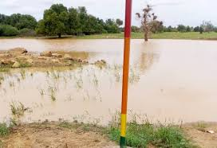
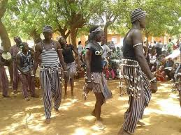
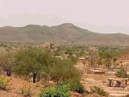

Bassin hydrographique et limites de la Sirba
« Aux rives de la Sirba, entre tradition et développement »
Pays : Burkina Faso
Statut : Région administrative
Provinces : 2
Départements : 10
Chef-lieu : Bogandé
Création : 2 juillet 2025
Population (est.) : ~675 000 hab. (Base RGPH)
Ethnies principales : Gourmantché, Peulh, Mossi
Langues : Gourmantchéma, Peulh, Mooré
Coordonnées : 12°58'N, 0°09'E
Superficie : ~4 650 km²
Présentation
La Sirba est l'une des quatre nouvelles régions créées lors de la réorganisation territoriale historique du 2 juillet 2025, qui porte désormais le Burkina Faso à 17 régions. Elle doit son appellation endogène à la rivière Sirba, affluent majeur du fleuve Niger, reconnue pour son rôle vital dans l'irrigation, l'agro-pastoralisme et la vie des communautés riveraines. Centrée sur les dynamiques provinces de la Gnagna et de la Komondjari, la création de la région de la Sirba répond à une volonté stratégique de l'État de rapprocher l'administration des citoyens, d'optimiser la gestion locale des ressources et de dynamiser le développement socio-économique de l'Est burkinabè.
Le patrimoine de la Sirba est profondément marqué par l'histoire du peuple Gourmantché, cohabitant harmonieusement avec les communautés Peules et Mossis. Les rituels de chefferie traditionnelle, les célébrations saisonnières et le respect des coutumes agraires forment le ciment de la communauté. Les expressions artistiques locales et les grands rendez-vous culturels, à l'instar du Festival Dilembu (fête des récoltes), jouent un rôle crucial dans la préservation et la mise en valeur du patrimoine immatériel régional.

Située dans la zone de transition entre la savane soudanienne et les franges sahéliennes, la région présente un relief principalement constitué de plateaux de latérite rouge-sang. Son climat de type tropical se caractérise par une saison des pluies (avril à septembre) essentielle pour les cultures de subsistance, suivie d'une longue saison sèche.
Sur les pistes de latérite se croisent quotidiennement les éleveurs transhumants menant leurs troupeaux, les cultivateurs rejoignant leurs parcelles et les commerçants convergeant vers le marché central de Bogandé. Ce maillage fait de la Sirba un carrefour d'échanges stratégique aux confins orientaux du pays.

Cours d'eau intermittent mais vigoureux, la rivière Sirba est le poumon hydrologique de la région. Contrairement au Mouhoun (seul fleuve pérenne du pays), son débit dépend fortement du calendrier des moussons. Néanmoins, ses crues saisonnières alimentent les nappes phréatiques sous-jacentes et permettent le développement d'activités maraîchères et de pêche indispensables pour l'autonomie alimentaire locale.

Les savanes arbustives et les zones humides bordant le réseau hydrographique offrent un écosystème propice à une biodiversité variée. La région abrite de nombreuses espèces de passereaux (rollier d’Abyssinie, guêpier d’Orient) et une petite faune de mammifères terrestres, constituant un potentiel encore inexploité pour l'écotourisme et l'observation ornithologique.

Inauguré en septembre 2018, ce viaduc stratégique de 309 mètres franchissant la rivière est une infrastructure vitale intégrée à la Route Nationale 18 (RN18). En assurant la continuité des transports même en période de hautes eaux, il brise définitivement l'isolement historique de la Gnagna. Le pont fluidifie les échanges de marchandises avec les grands centres urbains et garantit un accès sécurisé aux services de santé et d'éducation pour les villages comme Piéla.

Tourisme & Culture
La région de la Sirba se distingue par son potentiel naturel, incarné par le fleuve du même nom, et par la richesse de la culture Gourmantché, rythmée par des danses, masques et rituels. Ces paysages fluviaux abritent des zones propices à l'observation de la faune, idéales pour l'écotourisme et la découverte ornithologique



Ressources naturelles
Érigée en région administrative du Burkina Faso avec Bogandé pour chef-lieu, la Sirba regroupe les provinces de la Gnagna et de la Komondjari. Cette zone, caractérisée par un climat sahélien, repose sur l'agriculture et l'élevage, avec des ressources en eau cruciales provenant du bassin versant de la rivière Sirba. Son sous-sol, riche en formations du Birimien, présente un potentiel minéral stratégique pour le développement local.
Potentiel agricole 🌾
Le potentiel agricole du bassin de la Sirba repose sur la dualité stratégique entre les cultures céréalières pluviales (mil, sorgho, maïs) complétées par des cultures de rente (niébé, arachide), et une intense activité de maraîchage de saison sèche (oignons, tomates, pastèques, tabac) pratiquée sur les berges après la décrue de la rivière. Cet écosystème agro-pastoral sahélien tire profit d'un réseau de mares semi-permanentes sécurisant l'irrigation, ainsi que de parcs agroforestiers riches en Balanites aegyptiaca et palmiers doums, bien que sa productivité reste fortement soumise aux variations de la pluviométrie et aux défis sécuritaires locaux.
Potentiel éducatif 🏫
Le potentiel éducatif de la région de la Sirba s'appuie sur un réseau d'écoles primaires, de collèges et de lycées, soutenu par des centres d'alphabétisation en langues locales et des structures de formation professionnelle. Ce maillage éducatif bénéficie d'investissements publics et de l'appui de partenaires au développement, avec un accent particulier mis sur la scolarisation des filles et la construction d'infrastructures de proximité
Potentiel commercial 🛒
Artisanat traditionnel
La région de la Sirba se distingue à l'échelle nationale par le tissage de son célèbre pagne traditionnel gourmantché, particulièrement incarné par le savoir-faire des tisserands de la localité de Diaka. Ce textile unique se reconnaissance à la précision de ses rayures et à l'usage de teintures artisanales à base de plantes locales et de paille. Le sous-sol argileux de la Gnagna alimente également une poterie traditionnelle dynamique, une activité principalement féminine dédiée à la fabrication de jarres et de canaris indispensables pour la conservation de l'eau. Enfin, les artisans du feu perpétuent une forge héréditaire qui utilise encore des soufflets traditionnels en peau de chèvre pour concevoir des outils agraires comme la daba, tandis que la sculpture sur bois maintient vivante la fabrication de piliers sculptés monoxyles, autrefois utilisés pour structurer les concessions des notables.
Carte de situation
Provinces